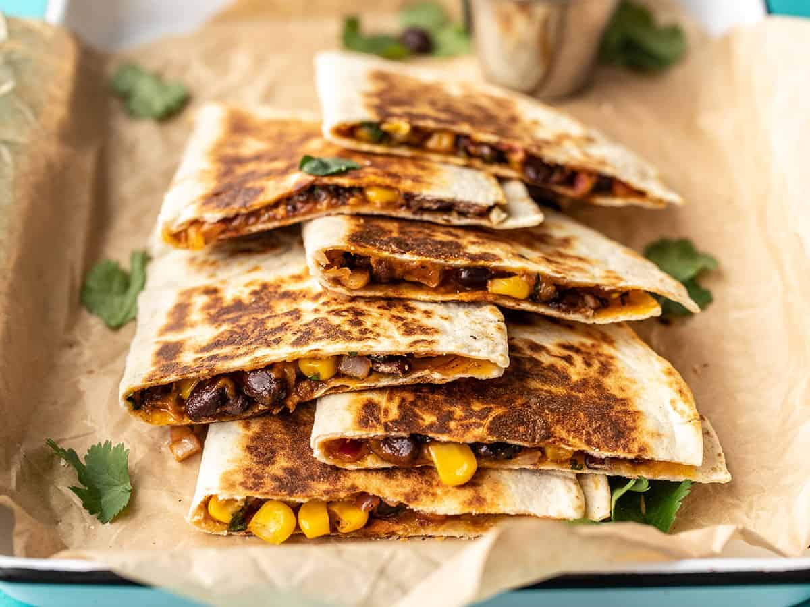

Easy Casadillas

Why I Love Them
These super tasty Black Bean Quesadillas have been a runaway hit since they were first posted here.
The spicy mix of cheese, beans, corn, cilantro, and onion makes and incredibly flavorful quesadilla
that’s perfect for dipping in some cool sour cream or salsa. Make up an entire batch and freeze some for later!
Ingredients
- 1 15oz.can black beans ($0.49)
- 1 cup frozen corn ($0.20)
- 1/2 cup red onion ($0.22)
- 1 clove garlic ($0.08)
- 1/4 bunch fresh cilantro (about ½ cup chopped) ($0.20)
- 2 cups shredded cheddar cheese ($1.69)
- 1 batch taco seasoning ($0.67)
- 10 flour tortillas (7-inch diameter) ($2.00)
Steps
- Drain the black beans and add them to a bowl along with the frozen corn (no need to thaw)
- Finely dice the onion, mince the garlic, and roughly chop the cilantro.
- Add the onion, garlic, cilantro, shredded cheddar,
and taco seasoning to the bowl with the beans and corn.
Stir until everything is evenly combined and coated in seasoning.
- Place a half cup of the filling on one side of each tortilla and fold over.
Cook the quesadillas in a skillet over medium heat on each side until brown and crispy and the cheesy filling has melted.
Slice into triangles then serve.
- To freeze the quesadillas, stack the filled and uncooked quesadillas with a piece of parchment paper between each quesadilla.
Place in a freezer bag and freeze for up to three months.
To reheat either microwave (for a soft quesadilla)
or cook in a skillet on low heat
(make sure to use low heat so that the filling has time to thaw and melt before the outside burns).